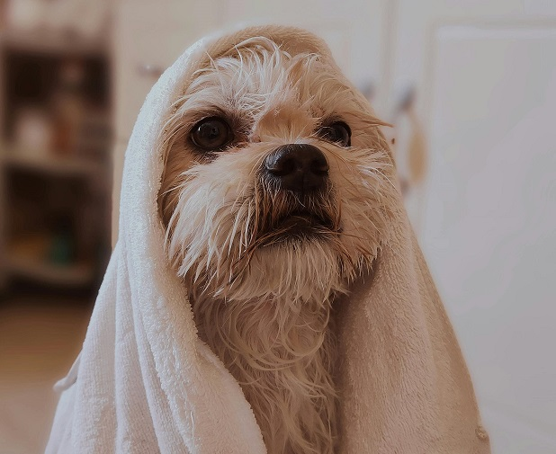

Canópolis
Tu mejor amigo, en las mejores manos
Servicios que ofrecemos
-
Transporte
Servicio de recogida y entrega a domicilio, con vehículos especialmente acondicionados para la comodidad y seguridad de tu perro.
-
Vacunas y desparasitación
Control veterinario periódico, vacunación al día y desparasitación interna y externa para mantener la salud de tu perro.
-
Atención veterinaria
Clínica veterinaria dentro del pensionado, servicio de urgencias 24/7 y consulta veterinaria gratuita al ingreso.
-

Baños y peluquería
Baños con productos de alta calidad, corte de pelo profesional y cepillado y limpieza de oídos para la higiene de tu perro.
-

Entrenamiento canino
Clases de obediencia básica, modificación de la conducta y socialización canina para un perro más educado y obediente.